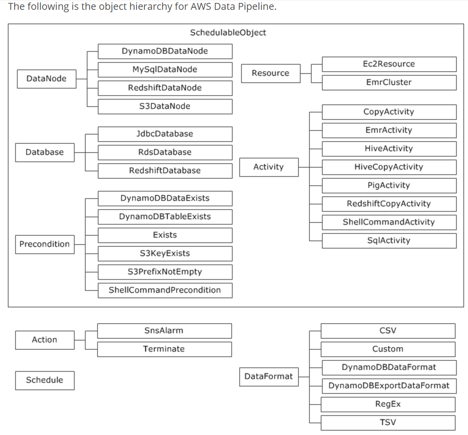
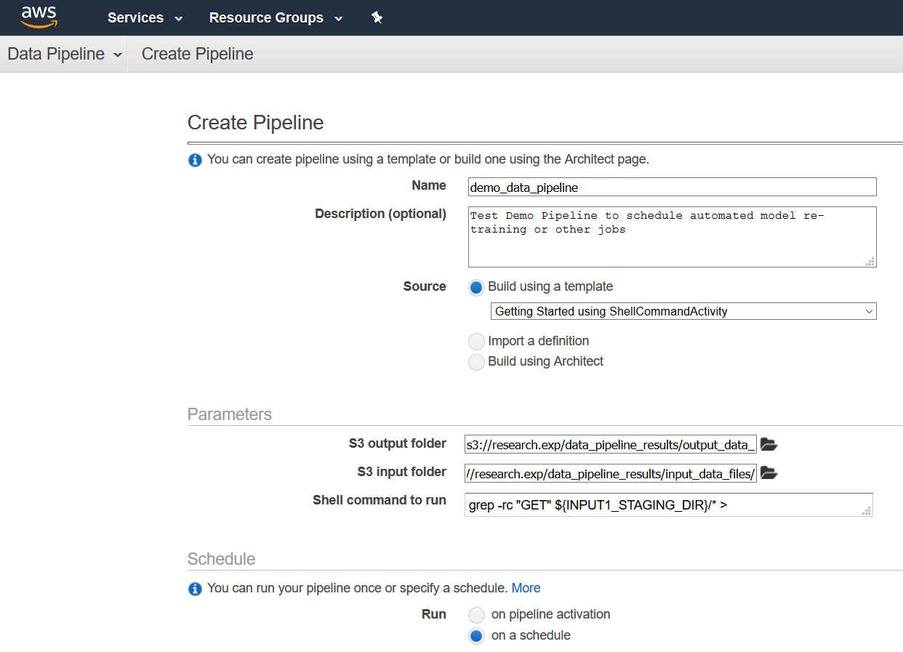
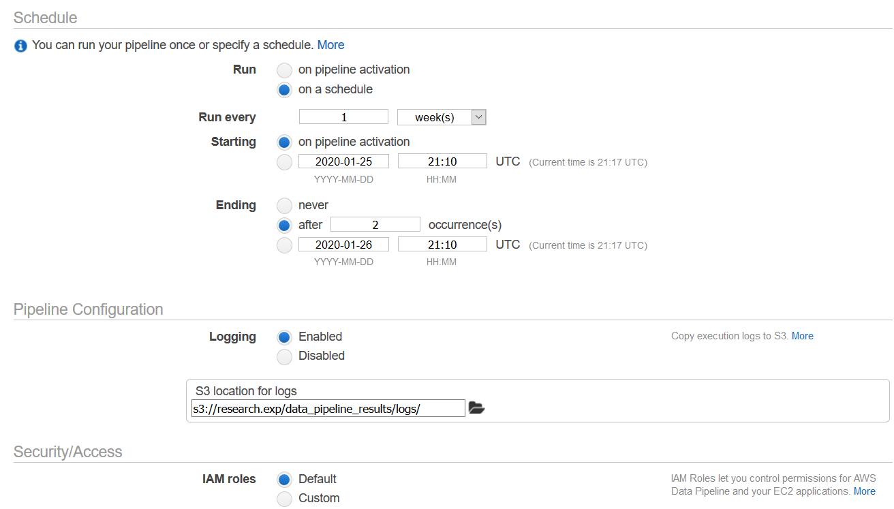
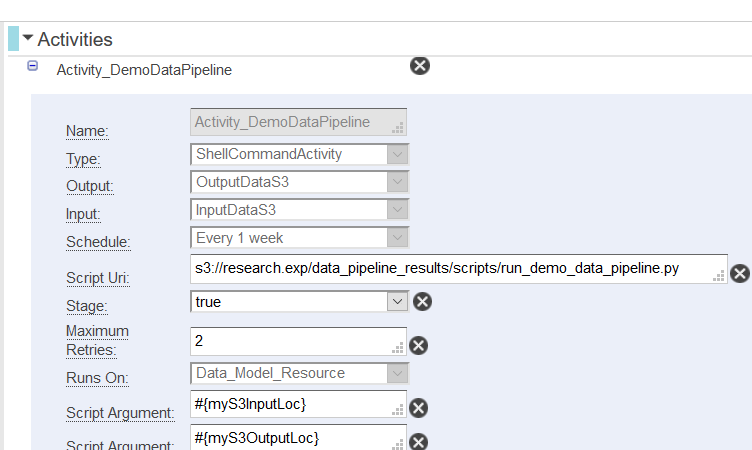
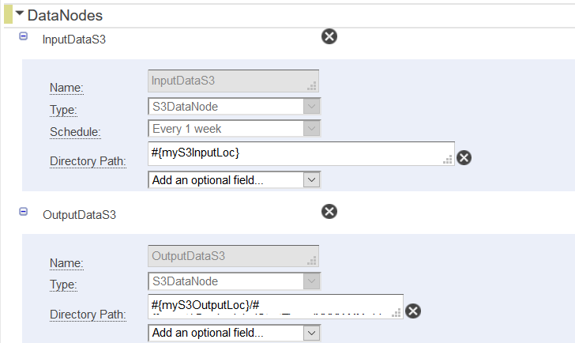
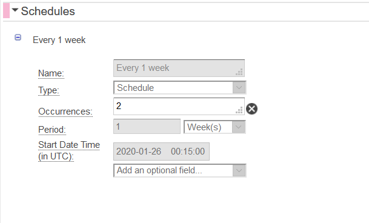
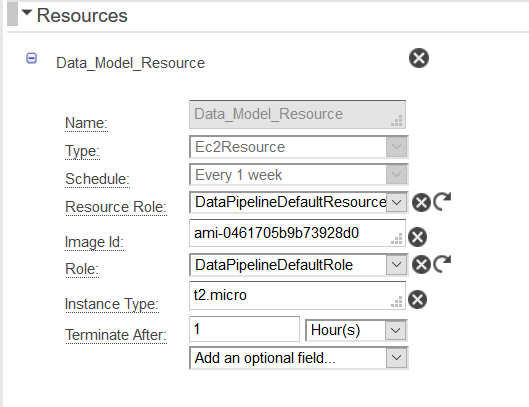
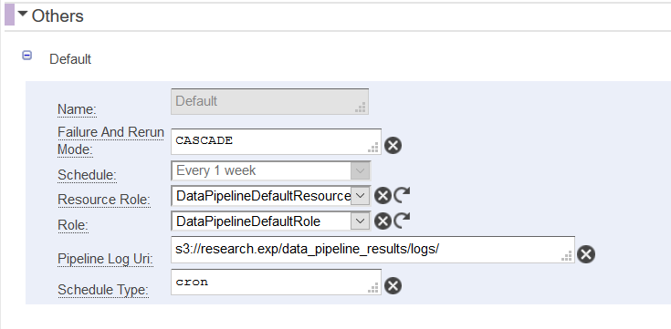

Using AWS Data Pipelines for Scheduling Jobs
Orchestrating recurring ML jobs end-to-end
AWS Data Pipeline is a web service that enables you schedule jobs to ingest, process, copy or move data between different storage services like S3, Redshift, etc; perform data cleaning, data transformation and other data processing; automate generation of reports and train models at scale. It’s reliable, simple, easy to setup and cost effective.
Why are AWS Data Pipelines useful?
- Scheduling automated pipeline runs have a lot of flexibility in terms of defining the schedule which can be set up to run daily, weekly, monthly
- Inexpensive way of not only performing data ingestion/ processing tasks but can also be used to train models
- The pipeline framework is very simple to set up
- Controlling compute resources depending on the requirement for each task
- Enables you to distribute computing to one or multiple machines running in parallel or as successive jobs as per the requirement
For training machine learning/ deep learning models, tasks can be defined such that less powerful smaller ec2 instances can be used for data ingestion, processing and the model training tasks can be run on more powerful ec2 instances thereby optimising cost.
Pipeline Components
There are 4 main parts in a pipeline -
Activity Runs a script/code. There are different kinds of activities that can be initiated within a pipeline like ShellCommandActivity - which runs time series or cron like scheduled tasks ; CopyActivity - copies data from one location to another where the input and output nodes are s3 data nodes. There are other kind of activities that can be initiated for example to run a map reduce job on a cluster or run a sql query on a database, etc.
Data Node Refers to the location and type of the data which can be used as an input or output of an activity. There are different kinds of data nodes - S3DataNode, is an amazon S3 location which can have multiple files and folders that can be used as an input to an activity as defined above and results of an activity can also be stored in an S3 Data Node or SqlDataNode, which is a sql table, or others such as DynamoDBDataNode, RedShiftDataNode.
Schedule Defines the timing of the scheduled run of the pipeline, which could be once every hour, day or weeks. Once the schedule of the pipeline is defined and the pipeline is activated, then it runs repeatedly according to the schedule.
Resources Refers to the ec2 instances that run the scripts as defined in an activity.
Some other aspects of the pipeline which are very useful are
- Preconditions: We may have certain preconditions set for an activity such that the activity will run only if the condition is satisfied. For example, we can check whether a data node exists and if it does, then the activity will run.
- Parameters: We can also define parameters of a pipeline which is accessible to all the objects
- Miscellaneous:
- Logging: The logs generated from different activities may be saved in s3, which is very useful in debugging the pipeline.
- Messaging/Alarms: The SNS (Simple Notification Service) is useful in sending messages regarding the status/ execution of each activity in the pipeline by email or to slack channels.
Here’s a snapshot of the various options available in the data pipeline

Source: AWS Data Pipeline documentation
Getting Started
There are two ways of starting a pipeline – goto Data Pipeline service in AWS services page and either click on “Create new pipeline” or click on a relevant existing pipeline and clone it from Actions tab and edit the pipeline. A pipeline can also be created from aws cli. Below, an example AWS Datapipeline is intialised as follows -


The schedule and the parameters should be changed as per requirements.
The following shows the DEMO pipeline workflow,

On the left pane is the workflow of the pipeline and the right pane above shows the different components each of which has many parameters further that we can add/edit.
Let’s look at how to setup each of the components of the pipeline.
Activity
Each activity is assigned a name (like a function name) and the type is one of the activity types as listed before, like ShellCommandActivity. It’s scheduled to run weekly in the example below, the schedule is defined later. Script Uri refers to the location of the script that the activity should run. The Maximum Retries value controls how many retries or attempts the pipeline should make in the event that the pipeline run is unsuccessful in the first attempt. The first script argument to the activity is the input location which is an s3 bucket, second argument being the output S3 location, which can be passed as parameters and is accessible to all activities / pipeline objects. Additonal script arguments can be added using the tab at the bottom of each activity.

The Runs on parameter is the ec2 resource that runs the activity that will be discussed later as setting up the ec2 instance is key. The s3 input and output locations passed as script arguments and can be used to pull data, perform transformation, train model and save outputs to the output s3 location. Additional parameters like On Fail and On Success parameters can be passed the SNS(Simple Notification Service) object, which sends a message on success or failure of the pipeline.
Also, more activities can be added to the pipeline from the Add tab and we can also have dependencies between two activities such that one is scheduled to start only after completion of another activity.
Data Nodes
The Data Node refers to the location of the data to be used as input to the various activities. In this example, there are two data nodes - the input and output S3 data nodes that are used as input of the activity that runs the script and saves the output in the output data node.

Schedule
The schedule defined below means that the pipeline will run once every week at 00:15 UTC hours. There are other parameters to control the schedule and the period can be hours/mins/ days/ week, etc. This pipeline is set to terminate after 2 occurences but one could remove this to have a recurring schedule until it’s changed.

Resources
The ec2 resource needs an IAM role, which is predefined and is used to set the permissions of access for the pipeline, is represented by the “Role”. The other parameters define other aspects of the ec2 resource, most importantly the AMI image ID, which is the machine for running the activity and should have all the libraries you’ll need to perform computations. There are many existing AMI image ID’s available in the marketplace which can be used but depends on the purpose of the pipeline. There are many deep learning AMI’s available for instant use but can be more expensive. An alternate would be to create your own AMI image by creating an ec2 instance, and manually installing all libraries and creating an AMI image from it.
Its desirable to have a separate ami for your pipeline as the needs/ requirements maybe different, for example, there may be packages that are required for a particular problem and having a separate ami which is used only for the pipeline ensures fewer pipeline errors as changes in package versions may cause the pipeline to break.
The instance type parameter enables control of size of the intances - allowing for having smaller instances like t2.micro for less computationally intensive tasks while using gpu enabled instances for training deep learning models.

Others
The pipeline objects defined as SuccesAction can be used to send messages either through emails or can be sent to slack channels by creating a Simple Notification Service, through the Topic Arn parameter, after each activity is completed. Also, the Default tab allows for logging, which stores the log for each activity in the specified location in s3, in the Pipeline Log Uri parameter.
The logs are very useful in debugging pipelines, which can be done using a package for logging or using print statements. The log for the DEMO pipeline is shown below -

Conclusion
The demo pipeline shown above is extremely simplistic and is just to introduce the basic setup but in practice, the pipeline can be way more complex depending on the complexity requirement such as having multiple activities for transferring or copying data between different storage services the output of which may be further fed into another activity that performs data processing, etc which can be further the input of another activity that trains the model and saves the output in s3 or a database.